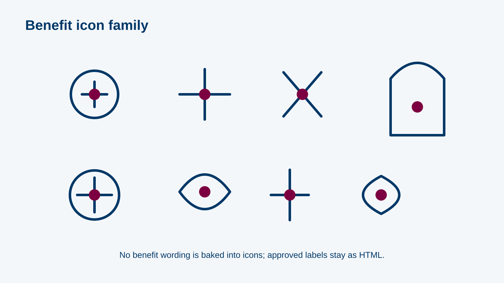

MODULE 06
RCM Part B: New EBP Benefits & Claim-Rejection Analysis
~20 minutes
✦rcmb-000 · L1 Title · title visual · supplied client logo and background onlyRCM Part B: New EBP Benefits & Claim-Rejection Analysis · official client logo and palette applied to every reference screen.
storyboard.md; screenshots, policy values and hotspot coordinates remain subject to the module’s source lock.MODULE 06
~20 minutes
✦rcmb-000 · L1 Title · title visual · supplied client logo and background onlyL3 Content · A — Intro
The EBP added new benefits and amended others · Coverage depends on the table of benefits and the documentation · Partial coverage ≠ full approval
rcmb-001 · content_slide · screen visual reference only · inspect final responsive build before approvalL4 Question · B — Added vs amended
Cards: prevention exams · STDs · adult vaccination · home care for inpatients · temporary contraception · telemedicine · menopause/perimenopause cover · kidney transplant · diabetes programme → …

rcmb-010 · drag_drop · visual asset: rcmb-img-benefit-icons · screen visual reference only · inspect final responsive build before approvalL3 Content · C — Prevention, vaccines, STDs
Early exams: mammogram · Pap smear · FIT/colonoscopy · dietary counselling (risk criteria, B7) · FBS/HbA1c · lipids · DEXA · Adult vaccines: Tdap · PCV13 · PPSV23 …
rcmb-020 · tabs · visual asset: rcmb-img-benefit-icons · screen visual reference only · inspect final responsive build before approvalL4 Question · C — Prevention, vaccines, STDs
"A 52-year-old with BMI 32 and high cholesterol asks for help with diet to lower her heart risk." → covered behavioural/dietary consultation; document BMI and risk factors (B7)
rcmb-021 · mcq · screen visual reference only · inspect final responsive build before approvalL3 Content · D — Mental health
Included conditions (9) · Excluded: hypnosis, rehabilitation · Limit per policy period (B5) · Pre-authorisation for sub-limit services · Document: indication, link symptoms to a valid psychiatric diagnosis …
rcmb-030 · accordion · screen visual reference only · inspect final responsive build before approvalL4 Question · D — Mental health
"Hypnosis for alcohol use is covered under the mental-health benefit." → False
rcmb-031 · true_false · screen visual reference only · inspect final responsive build before approvalL3 Content · E — Other added benefits
Home care for inpatients (wound care, IV meds, catheter care) · Telemedicine (MOH-licensed centre, CHI rules) · Diabetes 360° programme (team + specialist visits) · Women's health (menopausal/perimenopausal …
rcmb-040 · tabs · visual asset: rcmb-img-benefit-icons · screen visual reference only · inspect final responsive build before approvalL4 Question · E — Other added benefits
Mental health ↔ sub-limit per policy period + pre-auth · Kidney transplant ↔ up to the policy limit · Telemedicine ↔ MOH-licensed centre · Home care ↔ after …
rcmb-041 · matching · screen visual reference only · inspect final responsive build before approvalL3 Content · F — The rejection log
Rebuilt HTML table, 8 rows, invented claim ids (B8): diagnosis · service · rejection comment. Comments drawn from slide 6: "pain, unspecified" · "fever" · "requires pre-authorisation as …
rcmb-050 · content_slide · screen visual reference only · inspect final responsive build before approvalrcmb-tbl-logRebuilt rejection rows (B8); invented ids CLM-0001…; no names, dates or providers
Draft alt: n/a
PENDING relevant Phase 0 and SME visual approval; provenance recorded before production.L4 Question · F — The rejection log
The 8 comments → Documentation · Coding · Policy / pre-auth · Timing / follow-up period · Billing process (categories per B9)
rcmb-051 · drag_drop · screen visual reference only · inspect final responsive build before approvalrcmb-tbl-logRebuilt rejection rows (B8); invented ids CLM-0001…; no names, dates or providers
Draft alt: n/a
PENDING relevant Phase 0 and SME visual approval; provenance recorded before production.L5 Scenario · F — The rejection log
Claim rejected: "Fever — non-specific diagnosis". Node 1: resubmit unchanged / bill again / review the note ✔. Node 2: the note shows fever 3 days, dysuria, positive …
rcmb-052 · decision_scenario · screen visual reference only · inspect final responsive build before approvalL4 Question · G — Practice
Bank of 15 patient requests across all benefits (e.g. adult influenza vaccine; PCOS hormonal panel; telemedicine follow-up from an unlicensed app; IUD insertion; home IV antibiotics after discharge …
rcmb-060 · adaptive_practice · screen visual reference only · inspect final responsive build before approvalL6 Results / close · Close
rcmb-o1…o3
rcmb-090 · results_breakdown · screen visual reference only · inspect final responsive build before approvalL6 Results / close · Close
Know what's new · Document to the benefit's criteria · Check limits and pre-auth · Rework, don't resubmit · Link: EBP one-page summary (PDF)
rcmb-091 · summary · screen visual reference only · inspect final responsive build before approval